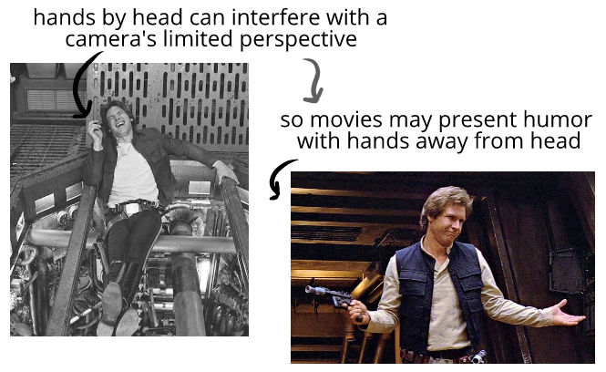
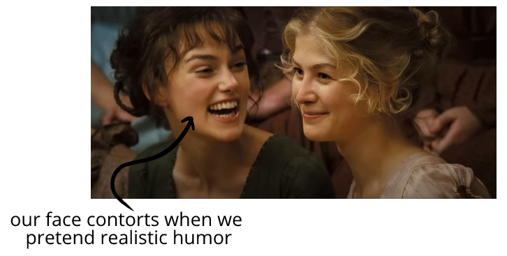

Spectator entertainment makes choices about how it wants to convey evaluatory information.
A movie doesn't have to prioritize realism of humor—instead a movie may:
Prioritize pacing. When we laugh in conversation, the laughter may take up a substantial proportion of the conversation. But for pacing reasons, movies don't want laughter to take up the same proportion of a scene.
Prioritize camera shots.
If a movie wants a clear shot of a face, the director will instruct the actor not to put their hands near their heads when pretending to laugh. This prevents a common humor tell from being present in many scenes:

Prioritize characterization. In a movie, it can be charming to see the roguish character smirk as they receive an award—but it can be off-putting in real life. In reverse, it can be charming to see someone beam at an award ceremony in real life, but might feel like weak characterization in a movie:
Prioritize what's flattering on camera. Genuine smiles contort our faces. Some movies rarely let actors or characters blink on screen, let alone scrunch their eyes when they smile.
Below, an actor mimics more realistic humor, which shows teeth and scrunches her eyes—things that may not be seen as conventionally flattering on camera. Movies often avoid normal these humor tells as a stylistic choice.

Prioritize storytelling. As we watch a movie, we may register a smile as fitting the themes, character arcs, music, romance, and so on. But when we imagine many movie smiles happening in real life, they can seem odd: